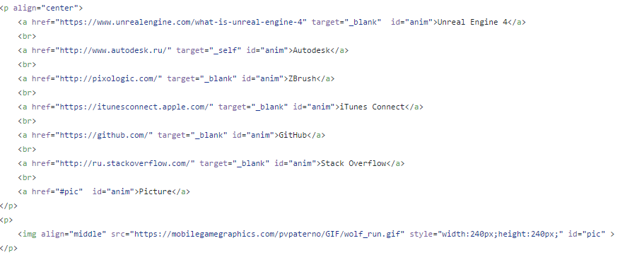

ИДБ-13-14
Тег: LabWork
Wiki: лабораторная №1 Wiki page

Тег "a" является одним из важных элементов HTML и предназначен для создания ссылок. В зависимости от присутствия атрибутов name или href тег устанавливает ссылку или якорь. Якорем называется закладка внутри страницы, которую можно указать в качестве цели ссылки. При использовании ссылки, которая указывает на якорь, происходит переход к закладке внутри веб-страницы.
Ниже приведен фрагмент кода, в котором реализуются различные способы использования ссылок:
